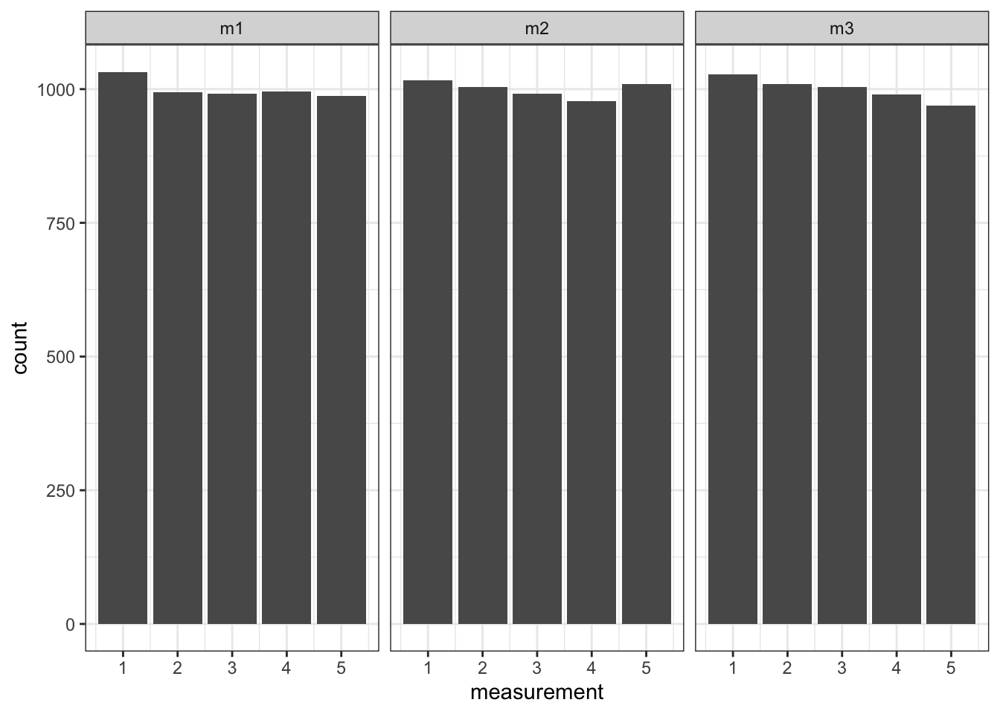

library(tidyverse)
library(lavaan)
library(gt)5 Simulating CFA data
Simulating data as a way of life, etc. lavaan has a pretty useful function lavaan::simulateData() for this purpose. But it is sort of a lazy way – we will learn more and improve our understanding if we write original code to simulate the data we need. Simulating with a ready-made function also takes away some of the value of simulation in the first place – of course a lavaan model will recover the true parameter estimates for data that was generated with the exact same model definition.
5.1 Metric measured variables
See this great guide
5.2 Ordinal measured variables
- Specify Your Ordinal Model:
You need to specify two things:
- The loadings
- The cutpoints
For the cutpoints: lavaan assumes a standard gaussian shape for the latent scale referenced by the cutpoints. So when setting up the cutpoints it’s helpful to imagine each cutpoint as representing a number of standard in a particular direction. And since ~99.7% of the probability mass of a standard gaussian falls within 3 standard deviations of the mean, I find it helpful to limit myself to that range of values when setting the cutpoints here.
So for example, if I want the data to take on a bellcurve-like shape, I just set the cutpoints such that the they follow the general shape of the bellcurve. For example, below I set the first cutpoint as -1.5, which says that cumulative probability of falling into category 1 is the probability mass less than 1.5 standard deviations from the mean standard normal distribution along the left tail. More generally, we can write the probabilities like so:
\[ P(Z < -1.5) \approx 0.0668 \] \[ P(Z < -0.5) \approx 0.3085 \] \[ P(Z < 0.5) \approx 0.6915 \] \[ P(Z < 1.5) \approx 0.9332 \]
And in classic ordinal variable modelling fashion, we can just use subtraction to get the level-specific probabilities (we already got the probability of level 1 for free above):
\[ \begin{align*} P(-1.5 \leq Z < -0.5) & = P(Z < -0.5) - P(Z < -1.5) \\ & \approx 0.3085 - 0.0668 \\ & \approx 0.2417 \\ P(-0.5 \leq Z < 0.5) & = P(Z < 0.5) - P(Z < -0.5) \\ & \approx 0.6915 - 0.3085 \\ & \approx 0.383 \\ P(0.5 \leq Z < 1.5) & = P(Z < 1.5) - P(Z < 0.5) \\ & \approx 0.9332 - 0.6915 \\ & \approx 0.2417 \\ P(Z > 1.5) & = 1 - P(Z < 1.5) \\ & \approx 1 - 0.9332 \\ & \approx 0.0668 \\ \end{align*} \]
Here’s what happens when we simulate data from a simple CFA with a single imagined factor and 3 likert measured variables we imagine to be confounded by that factor. We get the expected ‘discrete bellcurve’ shape of the data:
# Declare the model, including loadings and cutpoints
pop.model <- '
f1 =~ .8*m1 + .8*m2 + .8*m3
m1 | -1.5*t1 + -0.5*t2 + 0.5*t3 + 1.5*t4
m2 | -1.5*t1 + -0.5*t2 + 0.5*t3 + 1.5*t4
m3 | -1.5*t1 + -0.5*t2 + 0.5*t3 + 1.5*t4
'
# Simulate data from the model
fake_dat <- lavaan::simulateData(model = pop.model, sample.nobs = 5000)
# Visualize the measured dat
fake_dat |>
select(m1, m2, m3) |>
pivot_longer(everything(), names_to = "var", values_to = "measurement") |>
ggplot() +
geom_bar(aes(x = measurement)) +
facet_wrap(~var) +
theme_bw()Unsurprisingly, the lavaa::cfa() function is able to recover the cutpoints and the loadings:
# Fit the model
fit_1 <- cfa(pop.model, data = fake_dat, ordered = c("m1", "m2", "m3"))
tidy_fit <- fit_1 |> broom::tidy()
# Filter the data
filtered_data <- tidy_fit %>%
filter(grepl("f1 =~", term) | grepl("\\|", term)) %>%
select(term, estimate)
# Create the table
filtered_data %>%
gt() %>%
tab_header(
title = "Loadings and Cutpoints"
) %>%
cols_label(
term = "Parameter",
estimate = "Estimate"
) %>%
fmt_number(
columns = c(estimate),
decimals = 2
)| Loadings and Cutpoints | |
| Parameter | Estimate |
|---|---|
| f1 =~ m1 | 0.80 |
| f1 =~ m2 | 0.80 |
| f1 =~ m3 | 0.80 |
| m1 | t1 | −1.50 |
| m1 | t2 | −0.50 |
| m1 | t3 | 0.50 |
| m1 | t4 | 1.50 |
| m2 | t1 | −1.50 |
| m2 | t2 | −0.50 |
| m2 | t3 | 0.50 |
| m2 | t4 | 1.50 |
| m3 | t1 | −1.50 |
| m3 | t2 | −0.50 |
| m3 | t3 | 0.50 |
| m3 | t4 | 1.50 |
But what if we want the measured variables to take on some other shape? We can just follow the same approach, slicing up the space beneath the standard normal distribution to allocate probability mass however we like. For example, say we want the categories to follow a uniform distribution we can set the cutpoints at the distribution’s quintiles, so that each has equal probability mass. Let’s figure out what those are:
qnorm(c(0.2, 0.4, 0.6, 0.8))[1] -0.8416212 -0.2533471 0.2533471 0.8416212Great. Now let’s plug them into the model.
pop.model <- '
f1 =~ .8*m1 + .8*m2 + .8*m3
m1 | -0.8416212*t1 + -0.2533471*t2 + 0.2533471*t3 + 0.8416212*t4
m2 | -0.8416212*t1 + -0.2533471*t2 + 0.2533471*t3 + 0.8416212*t4
m3 | -0.8416212*t1 + -0.2533471*t2 + 0.2533471*t3 + 0.8416212*t4
'
# Simulate data from the model
fake_dat <- lavaan::simulateData(model = pop.model, sample.nobs = 5000)
# Visualize the measured dat
fake_dat |>
select(m1, m2, m3) |>
pivot_longer(everything(), names_to = "var", values_to = "measurement") |>
ggplot() +
geom_bar(aes(x = measurement)) +
facet_wrap(~var) +
theme_bw()